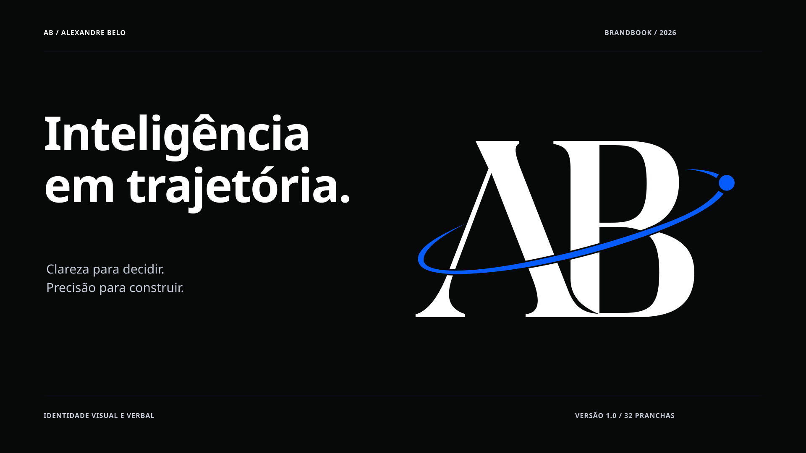

01 · Capa

Ler a orientação em texto
Clareza para decidir. Precisão para construir. A identidade AB conecta uma assinatura reconhecível a um gesto de direção. As iniciais preservam a autoria; a trajetória conecta as partes; o ponto estabelece foco. O sistema organiza essa relação para telas, documentos e aplicações editoriais. Sua consistência depende de decisões reproduzíveis: qual assinatura usar, como dimensioná-la, quais cores combinar e como traduzir o conceito em linguagem e movimento.
Regra de edição: exibir “AB · Sistema de identidade · 2026”; não atribuir datas de fundação ou conquistas comerciais não documentadas.